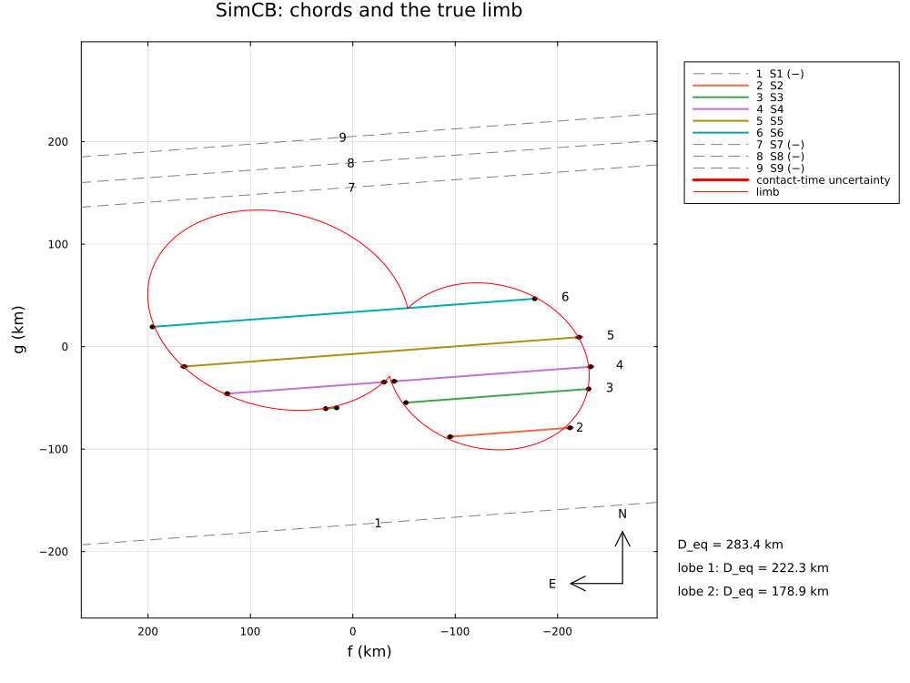
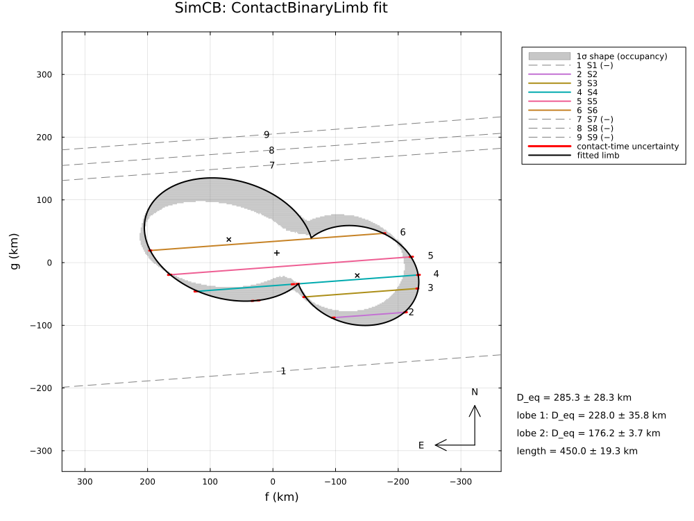
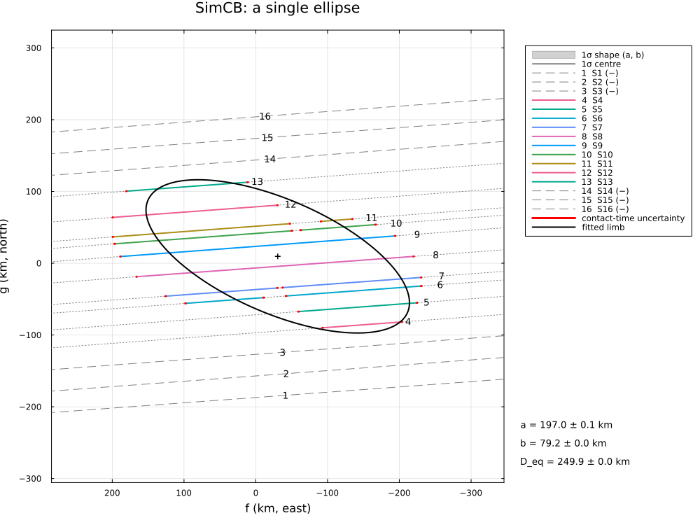
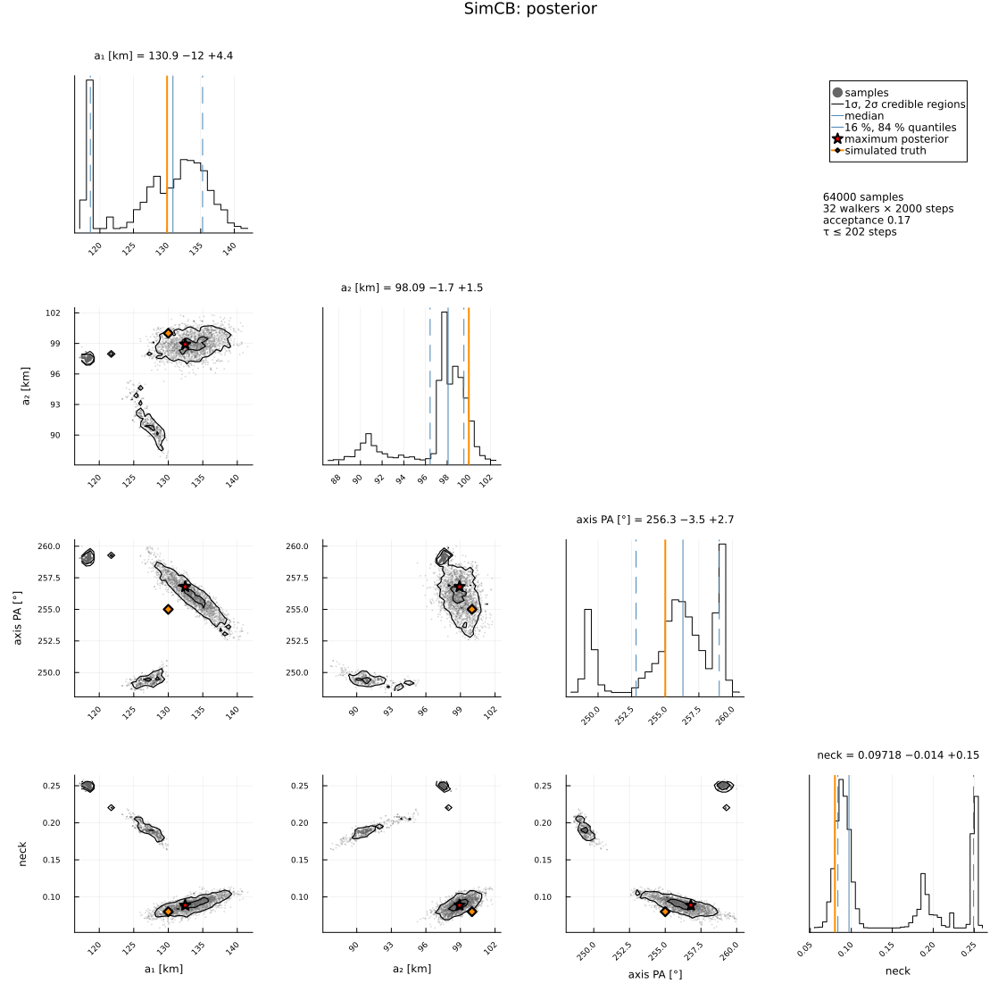

Synthetic: a contact binary in one event
A simulated occultation by a bilobed trans-Neptunian object (two lobes of 260 and 200 km, 430 km long; Arrokoth-like, scaled up), reduced with ContactBinaryLimb:
- nine stations at random offsets, on land, with light curves (exposures of 0.04–1 s, diffraction, stellar diameter) and timing errors of 0.05–0.1 s; the chords near the waist see two drops;
- the drops are detected and timed in each light curve; chords with several drops; a second timing with the velocities normal to the fitted limb;
- a single ellipse cannot reproduce two drops on one chord;
- the contact-binary model: the lobes, the neck and the waist, with the posterior;
- a joint fit of the light curves: the diffraction of the narrow gaps between the drops (complex amplitudes of the two opaque strips added) is modelled exactly, which a timing of each drop on its own is not.
The truth is known and printed next to the fitted values. Run it with:
julia --project=. examples/sim_contact_binary.jl [output_dir] (default: examples/output/sim_contact_binary)The code is not run when the manual is built. The output after each section is that of the last run of examples/sim_contact_binary.jl, stored in examples/output/sim_contact_binary/output.txt.
using Occultations, Random, Printf, Statistics
using Plots
out = length(ARGS) >= 1 ? ARGS[1] : mkpath(joinpath(@__DIR__, "output", "sim_contact_binary"))
rng = MersenneTwister(11)1. the simulated event
eph = EphemKeplerian(a=44.0, e=0.03, i=3.0, Ω=120.0, ω=40.0, M=300.0, epoch=Epoch("2024-01-01"), name="SimCB")
body = Body("SimCB", eph; radius=150.0)
t0 = Epoch("2024-12-30T20:00:00")
ra, dec, _ = ephem_radec(body, t0)
star = Star(ra + 0.001 / 3600 / cosd(dec), dec; name="SimStar", mag=Dict("V" => 13.0, "K" => 12.0), ra_err=0.1, dec_err=0.1)
ev = Event(star, body, t0; name="SimCB") # simulated: no date in the plots
D = ev.ca.dist_km
sd = apparent_diameter(star, D)
@printf("distance %.2f au, shadow velocity %.2f km/s, stellar diameter %.2f km, Fresnel scale %.2f km at 0.6 µm\n",
D / 1.495978707e8, ev.ca.vel, sd, fresnel_scale(0.6, D))The truth: lobe 1 with semi-axes 130 × 95 km, lobe 2 with 100 × 80 km, along an axis at position angle 255° (19° from the direction of motion, so that chords near the waist see two drops); the centres are d = (a₁ + a₂)(1 − neck) apart, neck = 0.08 (the lobes overlap by 8 % of their length); the system is 8 km west and 14 km north of the ephemeris position.
a1, b1, a2, b2, neck, axis_pa = 130.0, 95.0, 100.0, 80.0, 0.08, 255.0
center = (-8.0, 14.0)
d = (a1 + a2) * (1 - neck)
x1, x2 = -d * a2 * b2 / (a1 * b1 + a2 * b2), d * a1 * b1 / (a1 * b1 + a2 * b2) # lobe centres, area-weighted centre at 0
truth = CompositeOutline([EllipseOutline(a1, b1, axis_pa + 90), EllipseOutline(a2, b2, axis_pa + 90)],
[(x1 * sind(axis_pa), x1 * cosd(axis_pa)), (x2 * sind(axis_pa), x2 * cosd(axis_pa))])
println("true limb: ", truth)
@printf("area-equivalent diameter %.1f km\n", 2 * equivalent_radius(truth))distance 42.36 au, shadow velocity 25.74 km/s, stellar diameter 0.48 km, Fresnel scale 1.38 km at 0.6 µm
true limb: CompositeOutline(EllipseOutline(a = 130.000 km, b = 95.000 km, PA(minor) = 345.00°) at (80.35, 21.53) km, EllipseOutline(a = 100.000 km, b = 80.000 km, PA(minor) = 345.00°) at (-124.04, -33.24) km)
area-equivalent diameter 283.4 km2. light curves → drops → timings
Nine stations at random offsets across the path, on land and in the dark, spread along the track (examples/sim_stations.jl), each with its own equipment, from GPS-timed video to visual timing: exposures of 0.04 to 1 s and different noise. Each station has a systematic timing error with σ of 0.05–0.1 s (GPS- synchronised timing), unknown to the reduction; as in real reports, this accuracy is added in quadrature to the error of each contact time. Each light curve is simulated with all its drops. The drops are found as runs of points below half the baseline (a box search would find two deep drops with a short gap as one box), and each is timed in its own window (between the neighbouring drops) with the diffraction model.
include(joinpath(@__DIR__, "sim_stations.jl"))
offsets = random_offsets(MersenneTwister(45), 9, -220.0, 210.0; mingap=12.0)
pv = positionv(star, eph, GEOCENTER, ev.tref)
n̂ = (-pv.vg, pv.vf) ./ hypot(pv.vf, pv.vg)
sites = stations(star, body, ev.tref, offsets .+ (center[1] * n̂[1] + center[2] * n̂[2]); rng=rng)
# the velocity of the shadow normal to a limb O (centre c) at the instant τ of a track
function vnormal(tr, O, c, τ)
f, g = tr(τ)
nx, ny = limb_normal(O, f - c[1], g - c[2])
vf, vg = velocity(tr, τ)
return abs(vf * nx + vg * ny)
end
# the contacts of the drops `found` in a light curve, each drop timed in its own window with the
# normal velocities vel(τ) at its edges
function time_drops(lc, found, vel; σt=0.0)
cs = Contact[]
for (k, x) in enumerate(found)
lo = k == 1 ? -Inf : (found[k-1].emersion + x.immersion) / 2
hi = k == length(found) ? Inf : (x.emersion + found[k+1].immersion) / 2
tf = fit_timing(lc; vel=vel(x.immersion), vel_emersion=vel(x.emersion), dist=D, star_diam=sd, tmin=lo, tmax=hi,
immersion=x.immersion, emersion=x.emersion, rng=rng)
c = contact_times(tf)
push!(cs, Contact(:immersion, c.immersion, hypot(c.immersion_err, σt)),
Contact(:emersion, c.emersion, hypot(c.emersion_err, σt)))
end
return cs
end
detections = Dict{String,Any}()
σclks = Dict{String,Float64}() # the timing accuracy of each station [s]
dclocks = Dict{String,Float64}() # and its actual timing error
for (j, st) in enumerate(sites)
obs = st.observer
_, _, texp, noise = st.equipment
σclock = 0.05 + 0.05rand(rng) # the timing accuracy of this station
dclock = σclock * randn(rng) # and its actual timing error
σclks[obs.name] = σclock
dclocks[obs.name] = dclock
drops = [(a - ev.tref + dclock, b - ev.tref + dclock) for (a, b) in predicted_contacts(ev, obs, truth; center=center,
window=abs(st.τ) + 200, step=0.02)]
# the velocity of the shadow normal to the limb at each contact sets the time scale of its diffraction fringes
tr = Track(star, body, obs, ev.tref, st.τ - 60, st.τ + 60)
t = collect(range(round(st.τ) - 30, round(st.τ) + 30; step=texp))
lc = simulate_lightcurve(t, drops; tref=ev.tref, vel=[vnormal(tr, truth, center, a) for (a, _) in drops],
vel_emersion=[vnormal(tr, truth, center, b) for (_, b) in drops], dist=D, star_diam=sd,
λ=0.6, σ=noise, exptime=texp, rng=rng, name=obs.name)
# a drop must span at least three exposures: one or two low points are not a detection
found = filter(x -> x.emersion - x.immersion >= 3texp, detect_occultations(lc; method=:threshold))
detections[obs.name] = found
# first pass: the normal velocities are not known yet; the shadow velocity is used
cs = time_drops(lc, found, τ -> ev.ca.vel; σt=σclock)
push!(ev, isempty(cs) ? Chord(obs.name, obs, lc) : Chord(obs.name, obs; contacts=cs, lightcurve=lc))
@printf("%-4s %7.2f° %6.2f° %-21s %.2f s, σ %.2f, timing error %+.2f s cross-track %+5.0f km: %d drop(s) simulated, %d detected %s\n",
obs.name, obs.lon, obs.lat, st.equipment[1], texp, noise, dclock, offsets[j], length(drops), length(found),
join([@sprintf("[%.2f, %.2f] s", x.immersion, x.emersion) for x in found], " "))
end
display(ev)S1 19.13° 18.39° CMOS camera, GPS 0.10 s, σ 0.05, timing error -0.06 s cross-track -187 km: 0 drop(s) simulated, 0 detected
S2 14.54° 18.25° video, GPS-timed 0.04 s, σ 0.10, timing error -0.22 s cross-track -108 km: 1 drop(s) simulated, 1 detected [156.62, 161.18] s
S3 7.43° 17.01° CMOS camera, GPS 0.10 s, σ 0.05, timing error -0.04 s cross-track -72 km: 2 drop(s) simulated, 2 detected [176.65, 183.55] s [186.15, 186.55] s
S4 17.71° 19.39° CMOS camera, GPS 0.10 s, σ 0.05, timing error -0.08 s cross-track -50 km: 2 drop(s) simulated, 2 detected [145.35, 152.85] s [153.05, 159.05] s
S5 14.88° 19.12° CCD, long cycle 0.50 s, σ 0.03, timing error -0.02 s cross-track -21 km: 1 drop(s) simulated, 1 detected [154.75, 169.25] s
S6 22.05° 20.77° CCD, long cycle 0.50 s, σ 0.03, timing error +0.09 s cross-track +20 km: 1 drop(s) simulated, 1 detected [132.75, 147.25] s
S7 23.83° 22.15° CCD, long cycle 0.50 s, σ 0.03, timing error +0.04 s cross-track +142 km: 0 drop(s) simulated, 0 detected
S8 24.37° 22.45° video, GPS-timed 0.04 s, σ 0.10, timing error +0.06 s cross-track +166 km: 0 drop(s) simulated, 0 detected
S9 5.32° 18.94° CCD, long cycle 0.50 s, σ 0.03, timing error -0.03 s cross-track +191 km: 0 drop(s) simulated, 0 detected
Event SimCB: SimCB occults Star(SimStar, RA=06 35 33.9461, Dec=+22 02 51.553)
closest approach 2024-12-30T19:59:58.810: 0.0001" (2.2 km), PA 184.08°, 25.743 km/s, distance 42.3622 au
Chord(S1, negative, with light curve)
Chord(S2, positive, with light curve)
Chord(S3, positive, 2 drops, with light curve)
Chord(S4, positive, 2 drops, with light curve)
Chord(S5, positive, with light curve)
Chord(S6, positive, with light curve)
Chord(S7, negative, with light curve)
Chord(S8, negative, with light curve)
Chord(S9, negative, with light curve)3. a single ellipse
A convex limb gives at most one drop per chord: the second drop of a chord cannot be reproduced, whatever the ellipse. With the visible segments as constraints (the star seen between the drops) the fit is worse still.
r1 = fit_limb(ev; rng=rng)
r1v = fit_limb(ev; visible=:soft, rng=rng)
@printf("ellipse: χ²/dof = %.0f; with the visible segments χ²/dof = %.0f\n", reduced_chi2(r1), reduced_chi2(r1v))ellipse: χ²/dof = 3174; with the visible segments χ²/dof = 31754. the contact-binary model
Two ellipses along a common axis; the starting values come from the ellipse of all the contacts (its major axis gives the axis of the lobes). Unlabelled contacts are matched to the nearest crossing of the same kind of the two-lobe outline, and the visible segments of the chords are constraints by default.
r2a = fit_limb(ev; model=ContactBinaryLimb(), rng=rng)
@printf("first pass (timings with the shadow velocity): χ²/dof = %.2f, b₁ = %.2f ± %.2f km (truth %.0f)\n",
reduced_chi2(r2a), r2a[:b1]..., b1)The timings of the first pass assume the shadow velocity at every edge, while the time scale of the diffraction fringes is set by the velocity normal to the limb, slower at oblique edges: the contacts are slightly biased. Second pass: each drop is timed again with the normal velocities at its edges predicted by the fitted limb, and the limb is refitted.
(cf, Of) = outlines(r2a)[1]
for c in filter(ispositive, collect(ev.chords))
tr = track(ev, c)
off = c.lightcurve.tref - ev.tref # light-curve time → time from ev.tref
cs = time_drops(c.lightcurve, detections[c.name], τ -> vnormal(tr, Of, cf, τ + off); σt=σclks[c.name])
replace_chord!(ev, Chord(c.name, c.observer; contacts=cs, lightcurve=c.lightcurve))
endWith these errors the chords still scatter more than expected: the short second drop of a chord through the waist is timed less well than its formal error says (a few exposures, a local minimum of the timing fit), and a gap narrower than an exposure merges two drops into one. The errors of the fit are therefore scaled by √(χ²/dof) (scale_errors=true). (A limb allowance σ_limb=:auto fails here: with so few chords a large allowance lets the two-lobe limb wander to a different shape.)
r2 = fit_limb(ev; model=ContactBinaryLimb(), scale_errors=true, rng=rng)
@printf("χ²/dof = %.1f: the errors are scaled by √(χ²/dof)\n", reduced_chi2(r2))
display(r2)
println("fitted vs true:")
row(n, tv) = @printf(" %-22s %9.3f ± %6.3f (truth %8.3f)\n", n, r2[n]..., tv)
for (n, tv) in ((:a1, a1), (:b1, b1), (:a2, a2), (:b2, b2), (:axis_pa, axis_pa), (:neck, neck),
(:center_f, center[1]), (:center_g, center[2]))
row(n, tv)
end
w = 2 * Occultations._waist(a1, b1, x1, a2, b2, x2) # the true width of the waist
for (n, tv) in ((:equivalent_radius, equivalent_radius(truth)), (:length, max(x1 + a1, x2 + a2) - min(x1 - a1, x2 - a2)),
(:neck_width, w), (:size_ratio, sqrt(a2 * b2 / (a1 * b1))))
row(n, tv)
endThe posterior samples the likelihood with the timing errors as given, not the scaled ones: it is narrower than the scaled covariance errors above and does not contain the excess scatter.
post = sample(r2; nsteps=3000, rng=rng)
display(post)
ds = derived_summary(post)
@printf("posterior: D_eq = %.1f −%.1f +%.1f km, neck width %.1f −%.1f +%.1f km (truth %.1f), size ratio %.3f −%.3f +%.3f\n",
2ds.equivalent_radius.median, 2ds.equivalent_radius.minus, 2ds.equivalent_radius.plus, ds.neck_width.median,
ds.neck_width.minus, ds.neck_width.plus, w, ds.size_ratio.median, ds.size_ratio.minus, ds.size_ratio.plus)
savefig(cornerplot(post; vars=[:a1, :a2, :axis_pa, :neck],
axislabels=Dict(:a1 => "a₁ [km]", :a2 => "a₂ [km]", :axis_pa => "axis PA [°]", :neck => "neck"),
truths=Dict(:a1 => a1, :a2 => a2, :axis_pa => axis_pa, :neck => neck), truth_label="simulated truth"),
joinpath(out, "contact_binary_corner.png"))first pass (timings with the shadow velocity): χ²/dof = 2419.31, b₁ = 102.71 ± 6.15 km (truth 95)
χ²/dof = 5.9: the errors are scaled by √(χ²/dof)
LimbProblem fit: χ² = 35.474, dof = 6, χ²/dof = 5.912
center_f = -6.298851 ± 14.869164
center_g = 15.347643 ± 18.625165
a1 = 137.576822 ± 12.474936
b1 = 94.458152 ± 21.254384
a2 = 99.657397 ± 3.685825
b2 = 77.860835 ± 1.827140
axis_pa = 254.355025 ± 5.646651
neck = 0.103023 ± 0.042186
derived:
offset_ra = -0.205014 ± 0.483958
offset_dec = 0.499532 ± 0.606208
equivalent_radius = 142.670767 ± 14.127626
lobe1_equivalent_radius = 113.996721 ± 17.886667
lobe2_equivalent_radius = 88.087503 ± 1.825835
size_ratio = 0.772720 ± 0.110879
mass_ratio = 0.461387 ± 0.198616
separation = 212.793692 ± 5.748706
length = 450.027911 ± 19.251231
neck_width = 76.208869 ± 22.277305
fitted vs true:
a1 137.577 ± 12.475 (truth 130.000)
b1 94.458 ± 21.254 (truth 95.000)
a2 99.657 ± 3.686 (truth 100.000)
b2 77.861 ± 1.827 (truth 80.000)
axis_pa 254.355 ± 5.647 (truth 255.000)
neck 0.103 ± 0.042 (truth 0.080)
center_f -6.299 ± 14.869 (truth -8.000)
center_g 15.348 ± 18.625 (truth 14.000)
equivalent_radius 142.671 ± 14.128 (truth 141.704)
length 450.028 ± 19.251 (truth 441.600)
neck_width 76.209 ± 22.277 (truth 68.552)
size_ratio 0.773 ± 0.111 (truth 0.805)
Posterior of LimbProblem: 32 walkers × 3000 steps (burn-in 1000), acceptance 0.17
center_f = -9.576703 -4.382994 +27.766607
center_g = 13.426048 -6.326985 +16.679677
a1 = 130.873140 -12.289864 +4.408883
b1 = 92.438535 -7.494074 +10.790042
a2 = 98.086852 -1.659368 +1.456347
b2 = 77.295447 -0.789699 +1.091030
axis_pa = 256.316001 -3.487523 +2.701165
neck = 0.097185 -0.013555 +0.151928
posterior: D_eq = 273.4 −2.7 +7.5 km, neck width 73.7 −8.1 +42.0 km (truth 68.6), size ratio 0.788 −0.033 +0.0395. joint fit of the light curves
The light curves themselves against the two-lobe limb (diffraction, stellar disc, exposure), starting from the fit of the timings. Drops less than ~10 Fresnel scales apart are computed together: the light diffracted into a narrow gap is part of the model. Each light curve carries the timing error of its station (0.05–0.1 s), which the photometric model would otherwise take as exact time stamps: every positive station gets a time offset with a Gaussian prior of its timing accuracy.
init = Dict(n => v for (n, v) in zip(r2.names, r2.values))
pos = [c.name for c in ev.chords if ispositive(c)]
priors = Dict(Symbol("dt_", n) => (0.0, σclks[n]) for n in pos)
r3 = fit_limb(ev; model=ContactBinaryLimb(), photometry=true, init=init, fit_dt=pos, priors=priors, starts=1, rng=rng)
@printf("χ²/dof = %.3f for %d light-curve points\n", reduced_chi2(r3), r3.dof + length(freenames(r3)))
for (n, tv) in ((:a1, a1), (:b1, b1), (:a2, a2), (:b2, b2), (:axis_pa, axis_pa), (:neck, neck))
@printf(" %-8s timings %8.3f ± %5.3f light curves %8.3f ± %5.3f (truth %7.3f)\n", n, r2[n]..., r3[n]..., tv)
end
println("time offsets of the joint fit (correction; the timing error has the opposite sign):")
for n in pos
@printf(" %-4s %+6.3f ± %5.3f s (timing error %+6.3f s)\n", n, r3[Symbol("dt_", n)]..., dclocks[n])
endThe joint fit is overconfident here. It reaches χ²/dof ≈ 1, but with nine stations, of which five see the body, its formal errors (a few 0.01 km) are far smaller than its deviations from the truth (up to 10 km in b₁), and the fitted time offsets do not recover the timing errors. The fit of the timings with scaled errors is the reliable result of this campaign; a joint fit needs more, and better sampled, light curves.
χ²/dof = 1.025 for 5271 light-curve points
a1 timings 137.577 ± 12.475 light curves 136.228 ± 0.065 (truth 130.000)
b1 timings 94.458 ± 21.254 light curves 104.891 ± 0.332 (truth 95.000)
a2 timings 99.657 ± 3.686 light curves 100.929 ± 0.031 (truth 100.000)
b2 timings 77.861 ± 1.827 light curves 79.472 ± 0.089 (truth 80.000)
axis_pa timings 254.355 ± 5.647 light curves 252.295 ± 0.077 (truth 255.000)
neck timings 0.103 ± 0.042 light curves 0.096 ± 0.000 (truth 0.080)
time offsets of the joint fit (correction; the timing error has the opposite sign):
S2 +0.101 ± 0.033 s (timing error -0.217 s)
S3 -0.026 ± 0.032 s (timing error -0.039 s)
S4 +0.022 ± 0.032 s (timing error -0.076 s)
S5 -0.000 ± 0.034 s (timing error -0.017 s)
S6 -0.062 ± 0.033 s (timing error +0.095 s)Figures
savefig(plot(ev; limb=truth, center=center, title="SimCB: chords and the true limb", size=(1000, 750)),
joinpath(out, "contact_binary_chords.png"))
savefig(plot(r2; title="SimCB: ContactBinaryLimb fit", size=(1000, 750)), joinpath(out, "contact_binary_fit.png"))
savefig(plot(post; title="SimCB: posterior limbs", size=(1000, 750)), joinpath(out, "contact_binary_posterior.png"))
savefig(plot(r1; title="SimCB: a single ellipse", size=(1000, 750)), joinpath(out, "contact_binary_ellipse.png"))
# a light curve with two drops, and the model of the joint fit
two = [c.name for c in ev.chords if count(x -> x.kind === :immersion, c.contacts) == 2]
for name in two[1:min(2, end)]
lc = ev[name].lightcurve
dd = detections[name]
savefig(plot(lc; model=model_lightcurve(r3, name)[2], title="$name: two drops", xguide="time [s]",
xlims=(dd[1].immersion - 5, dd[end].emersion + 5)),
joinpath(out, "contact_binary_lc_$name.png"))
end
println("figures written to ", out)The chords with the true limb, and the fit of the two lobes with its 1σ shape band:


The best single ellipse, and the posterior of the lobes:

